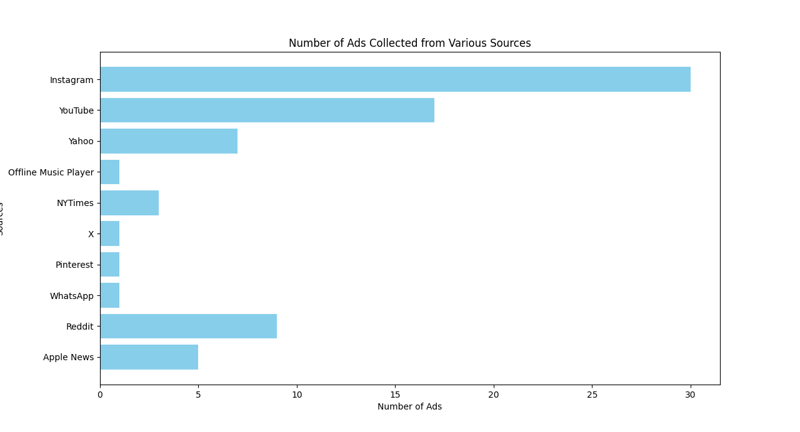

1. Introduction
Two of the sources provided for this project, Facebook Home’s 2013 “Dinner” ad and Cory Doctorow’s book How to Destroy Surveillance Capitalism, present two sides of the ad landscape. In the Facebook Home ad, we see each family member in the video have a personalized stream of content so that each of them can enjoy content that’s user-specific to take away from boring conversation or events. In contrast, Doctorow’s piece explicates the exploitative nature of these platforms; how the design of these platforms are made to condition users towards making interaction with ads. More specifically, Doctorow explains the intent of digital platforms to capitalize heavily on user data to create demographic-specific, addictive engagement loops that manipulate user behavior. Thus, to observe both aspects of digital ads, my primary objective throughout this project is to capture as many ads (across various platforms) as possible and identify areas of “manipulation” or persuasive techniques being used.2. Part 1: Data Collection
Caption: Figure showinng number of ads collected from various sources.
3. Part 2: Present Your Findings
3.1 Methodology and Challenges
To try to find as many different fallacies represented in ads as possible, my data collection looked for each fallacy type first before considering the source. Capturing ads from a diverse range of mediums was difficult, as I typically only consume content from 2 platforms: Instagram and YouTube. While both of these platforms are known for their ad personalization and monetization structure, I had almost forgotten to look for ads on YouTube because I’ve had the Premium version of their service for quite some time. Sourcing from Instagram was surprisingly easy in numbers, as an ad (sponsored content) was displayed every 3–4 posts or so. Finding ads from outside of these platforms was more challenging as my primary method was to think about platforms that need ads to support their business or try to recall sites I remember interacting/ seeing ads from. By the end of the project, I collected 93 ads from the following 10 sources: Instagram, YouTube, Yahoo, Offline Music Player (Mobile App), NYTimes, X, Pinterest, WhatsApp, Reddit, and Apple News. Since my method of data collection was based on a convenience sample of data sources and observational only (I did not interact with the ads to see if it influenced recommendations), it was not only inefficient but also tricky to know if the ads I collected are enough to probe algorithms and diverse categories of ads.3.2 Examples
Equivocation: The phrase "capitalizing" is used in two different senses. First, it implies benefiting from ads, and second, it references how ads are leveraging or exploiting the user. By using the same term with different meanings, it creates an ambiguous and catchy statement that grabs attention.
Ad Baculum: The statement "Donald Trump and his allies are outspending us by tens of millions of dollars" can be seen as an appeal to fear. It suggests that without your contribution, the opposing side's financial advantage could lead to a loss, creating a sense of urgency and fear of the consequences.
Post Hoc Ergo Procter Hoc: Using Grammarly, the ad promises benefits with improved communication skills and focus on everyday tasks.
Equivocation: Throughout the ad, the speaker talks about the different kinds of homes/ settings their product is entering into using physical doors, while at the end of the ad, the phrase "we're at your door" is used to mean shipping direct to your home address and be present on demand.
Equivocation: The phrase "sick-of-this" is used repeatedly throughout the ad, with first mention of being sick meaning bedridden and having a physical cold or illness. The second meaning an annoyance and frustration with tedius, complex cooking steps, which the product can provide a solution for (instant ramen).
Slippery Slope: While this ad is not the most extreme example of this fallacy, it uses the set-up to escalate an initially fun/ relaxing situation into an increasingly stressful and problematic scenario. The ad begins with the idea of sharing a room with your friends, but increasingly adds problems with sharing the shower, bathroom, hair dryer causing you and your friends to run out of personal space.
Post Hoc Ergo Procter Hoc: The main message of the ad is that because Mint Mobile is using a cheaper camera to shoot the ad, the savings from this are being passed on to the consumer in the form of lower prices for mobile service. In other words, by shooting the ad with a lower quality camera, users have more benefits from their service.
Irrelevant Conclusion: The ad concludes that because you were listening to Audible while in the bath, you were able to make impressive connections and solve problems. However, the true value of Audible is that it offers a wealth of audiobooks and content, not that it necessarily enhances your cognitive abilities in those specific ways.
Composition: The ad implies that TD Bank's various strengths (financial strength, industry expertise, supporting businesses) mean the entire bank is customer-centric. This might be seen as Composition, suggesting the whole bank is equally people-first because some parts of it are.
Post Hoc Ergo Procter Hoc: Using Shopfiy to make and host your website will give you more customers for your products.

Complex Question: The sentence structure and phrasing subtly implies that if you don't swipe, you aren't ready to think big. The structure of the sentence presupposes an answer, making you feel compelled to act to affirm your ambition.

Post Hoc Ergo Procter Hoc: By investing with Fisher Investments, the ad implies you will utilize "7 Ways to Retire Comfortably With $1 Million."

Post Hoc Ergo Procter Hoc: The implication of this ad is that their personalized kits will accomplish your weight loss objectives. In reality, the actual site and product does not directly correlate to weight loss, it's a personalized supplement you can take while on your weight loss journey.

Ad Populum: The ad provides the statistic of fighting nearly all common stains and uses the word "Dependable" to emphasize the popularity and universal application of their product.

Ad Populum: A key phrase in this ad is "Trusted by 100+ million users globally," which demonstrates the use of popular opinion to persuade new potential customers.

Irrelevant conclusion: The ad makes the conclusion that because it is capable of catching even paranomoral activity and ghosts on camera, that it is the best camera to use for home security.

Ad Baculum: The ad has the premise that if you don't use WhatsApp, your personal conversations might be intercepted or leaked to external users. By using WhatsApp, the product promises privacy in your conversations.

Faulty Analogy: The analogy is with chivalry and battery life; the idea is that while chivalry can survive, your old phone’s battery won't, nudging you to get the new iPhone, an unapplicable analogy.

Faulty Analogy: The ad uses a word play in its caption "Raise your lantern to bring light to the darkness of cancer." The analogy between physical light/ lanterns and combatting the difficult journey of cancer is an abstractly stretched analogy.

Post Hoc Ergo Procter Hoc: Using Canva to create your slide decks will generate more sales/ successful pitches.
4. Part 3: Deeper Analysis
4.1 Written Essay
I came across this ad a couple of months ago and was able to find the ad again when looking for ads relating to this project. It’s possible that the ad is personalized to me because a lot of the content I consume on YouTube are political skits on SNL. The persuasion tactic of the video is simple: use my opponent’s words against themselves. The ad is comprised of a singular clip of presidential candidate Kamala Harris speaking about the rise of prices on common goods. From a persuasive standpoint, this ad is incredibly effective as it uses unedited clips of the opponent (minimal changes if any) with direct quotes, which would signal to an audience member that the ad isn’t altering the argument of the other candidate/ twisting their words in any way. However, this ad is a clear example of the Post Hoc Ergo Propter Hoc fallacy. To quote the ad directly, "A loaf of bread costs 50% more today than it did before the pandemic. Ground beef is up almost 50%." The video then cuts away to "I'm Donald Trump and I approve this message." Clearly, this video is drawing a conclusion that due to President Biden's lead on economic policies, prices have gone up. Since Biden's presidency was during the pandemic, the framing of Candidate Harris' in context of time, implies that prices increased because of the actions taken from the pandemic and onwards. This messaging works in Candidate Trump's favor as he uses this quote to make the argument that Biden's presidency caused us to see an increase in prices for our everyday goods. This is, however, misleading as it assumes that there are no any external factors that have affected the increase of price. While Candidate Harris may continue to provide context that the national economy for all businesses suffered during the pandemic, the video is cut off immediately, to use Candidate Harris' words in a context that best fits Candidate Trump's campaign. I found this ad to be pretty persuasive despite having an opposing political stance. The most persuasive technique used in the ad is the seemingly raw clip of Candidate Harris in her speech. Using the clip without editing and no additional messaging from Candidate Trump made the ad feel authentic and easier to trust.4.2 Video Essay
References
YouTube Video Citations
YouTube. (2024). Screenshot 2024-10-16 151742 [Video]. YouTube. https://www.youtube.com/watch?v=FKMK0CT57LI
YouTube. (2024). Image_20241022105700 [Video]. YouTube. https://www.youtube.com/watch?v=8EXZYr3kiCc
YouTube. (2024). Image_20241022105533 [Video]. YouTube. https://www.youtube.com/watch?v=wOOX15I0xHg
YouTube. (2024). Image_20241022105636 [Video]. YouTube. https://www.youtube.com/watch?v=uG9Pwe6_XfU
YouTube. (2024). Image_20241022105719 [Video]. YouTube. https://www.youtube.com/watch?v=fzcHPall9pU
YouTube. (2024). Earn Your Best Grades | Succeed in School With Grammarly [Video] (2). YouTube. https://www.youtube.com/watch?v=CAHaREunMuk
YouTube. (2024). Congested & Couch-Ridden with Maruchan [Video]. https://www.youtube.com/watch?v=bferHozUx7Q
YouTube. (2024). (Airbnb) Girls Trip [Video]. https://www.youtube.com/watch?v=S43Vb30aM10
YouTube. (2024). US FY25 WPT2 Multi 30 CTV 16 9 OFFER+DISCLAIMER [Video]. https://www.youtube.com/watch?v=13X1UZ8w2PM
YouTube. (2024). (Amazon) Video Ad [Video]. https://www.youtube.com/watch?v=rQ5G8teSXHA
YouTube. (2024). 3 Months of Unlimited for $15/mo. | Mint Mobile New Customer Offer [Video]. https://www.youtube.com/watch?v=iiNudlyXT18
YouTube. (2024). Wax | Truth Tellers | Liberty Mutual Insurance Commercial [Video]. https://youtu.be/ZJhkvPmy1Is
YouTube. (2024). Earn Your Best Grades | Succeed in School With Grammarly (1) [Video]. https://www.youtube.com/watch?v=EOoZte1q6JQ
YouTube. (2024). (Audible) Video Ad [Video]. https://www.youtube.com/watch?v=jVGMuSN6rAk
YouTube. (2024). Unexpectedly Human: A TD Bank Story – Commercial [Video]. https://www.youtube.com/watch?v=zOuhAPypcSg
YouTube. (2024). Facebook Home "Dinner"- Interesting Family [Video]. https://www.youtube.com/watch?v=yF3Nk4YlU_Y
Images
Instagram. (2024). Image_20241022105700 [Image]. Instagram.
Yahoo. (2024). Image_20241022105533 [Image]. Yahoo.
Yahoo. (2024). Image_20241022105531 [Image]. Yahoo.
WhatsApp. (2024). Image_20241022105636 [Message]. WhatsApp.
Reddit. (2024). Image_20241022105719 [Post]. Reddit.
Book Citation
Doctorow, C. (2020). How to destroy surveillance capitalism. Tor Books.
Stanford Encyclopedia of Philosophy Citation
Stanford Encyclopedia of Philosophy. (n.d.). Fallacies. Retrieved from https://plato.stanford.edu/entries/fallacies/